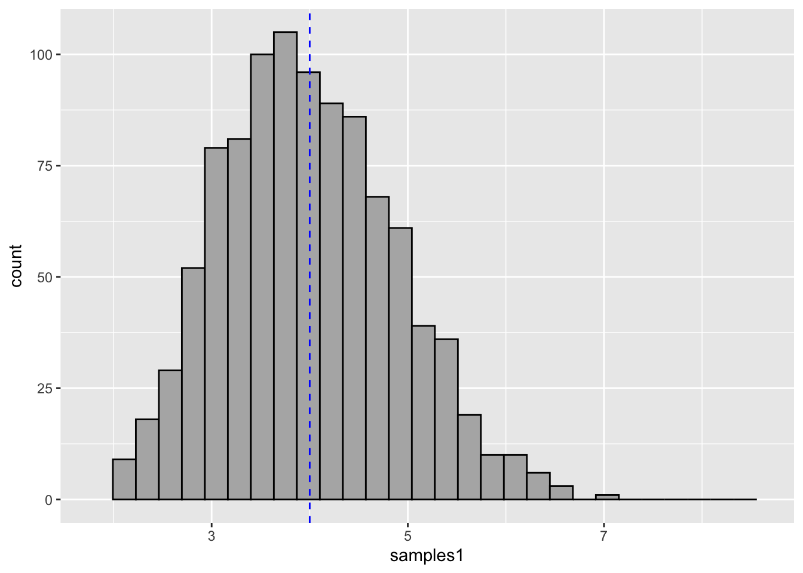

# Run this code only if you don't have the package installed
install.packages("tidyverse")Statistical Inference: Mean estimation
Welcome to the section “Statistical Inference: Mean estimation”. For this practice we are going to need to load the package tidyverse. In case you don’t have the package installed in your console, you can execute the following line of code:
If you have it, the you only need to load it by execute the following code:
library(tidyverse)To begin, let’s remember what a mean is
\mu=\frac{1}{n}\displaystyle\sum_{i=1}^n x_i
Estimating the Mean of a population
Population mean (\mu) is unknown. Unless we measure the value of the trait for the entire population, we’ll never know the real value of \mu.
Let’s suppose that x_1,x_2,...,x_n are obtained values from a sample of size n for a variable with unknown population mean \mu and variance \sigma^2. An estimator for the population mean \mu is the sample mean:
\overline{x}=\frac{1}{n-1}\displaystyle\sum_{i=1}^n x_i
Let’s imagine a population with a mean (for a given trait) of 1.09 and standard deviation of 0.4
set.seed(10)
population <- rnorm(5000, 1.09, 0.4)Now, let’s take a sample of size n=100 and estimate the sample mean with the function mean().
mean(sample(population, 100))[1] 1.122532Now you have an estimator of the mean. Is it the same of the population mean \mu? It isn’t, right?
So, let’s going to draw a couple of other samples of size 100 and see if it’s the same:
mean(sample(population, 100))[1] 1.089957mean(sample(population, 100))[1] 1.091194You probably noticed two things: neither of our previous results are exactly the same as population mean and every time we ran the code it yielded different results. There is no mistake in any of the results! That’s because the estimator of \mu, the sample mean \overline{x} is a random variable.
Let’s visualize it with 1000 samples:
B <- 1000
samples <- replicate(B, {
sample <- sample(population, 10)
mean(sample)
})
samples_df <- data.frame(samples) %>%
ggplot(aes(samples)) +
geom_histogram(col = "black", fill = "gray70") +
geom_vline(xintercept = 1.09, linetype = "dashed", col = "blue")
samples_dfStandard error for the mean
It is the degree of variability or dispersion of the sample around the \mu.
The dispersion of sample mean \overline{x} of size n will be determined by the sample distribution variance, which is equals to
var(\overline{x})=var(\frac{1}{n}\displaystyle\sum_{i=1}^n x_i)=\frac{1}{n^2}\displaystyle\sum_{i=1}^n var(x_i)=\frac{\sigma^2}{n}
According to this, the variance of the mean depends on the size of the sample n. Let’s explore this further by understanding the law of large numbers.
The law of large numbers
Following with the example of the fictitious population:
set.seed(10)
poblacion <- rnorm(5000, 1.09, 0.4)Now let’s take samples with varying n and plotting the distribution. Let’s start with n=10.
knitr::opts_chunk$set(warning = FALSE)
samples1 <- replicate(B, {
sample <- sample(poblacion, 10)
mean(sample)
})
data.frame(samples1) %>%
ggplot(aes(samples1)) +
geom_histogram(col = "black", fill = "gray70") +
geom_vline(xintercept = 1.09, linetype = "dashed", col = "blue") +
xlim(0.6, 1.5)Now let’s try with n=25:
knitr::opts_chunk$set(warning = FALSE)
samples2 <- replicate(B, {
sample <- sample(poblacion, 25)
mean(sample)
})
data.frame(samples2) %>%
ggplot(aes(samples2)) +
geom_histogram(col = "black", fill = "gray70") +
geom_vline(xintercept = 1.09, linetype = "dashed", col = "blue") +
xlim(0.6, 1.5)and let’s finish with n=100:
knitr::opts_chunk$set(warning = FALSE)
samples3 <- replicate(B, {
sample <- sample(poblacion, 100)
mean(sample)
})
data.frame(samples3) %>%
ggplot(aes(samples3)) +
geom_histogram(col = "black", fill = "gray70") +
geom_vline(xintercept = 1.09, linetype = "dashed", col = "blue") +
xlim(0.6, 1.5)As the sample size increases the variance decreases. From there we can estimate the error made in the estimation from a single sample of size n.
SE(\overline{x})=\sqrt{var(\overline{x})}=\frac{\sigma}{\sqrt{n}}
This value is known as standard error and allows us to quantify the degree of uncertainty in the estimation of a mean from a sample of size n. However, the study variable’s population variance \sigma^2 is unknown. So, it can be estimated from data by using the sample variance:
S^2=\frac{1}{n-1}\displaystyle\sum_{i=1}^n (x_i-\overline{x})^2
Thus, the standard error of the sample is estimated as:
SE(\overline{x})=\frac{S}{\sqrt{n}}
Example
Estimate the mean and the standard error of the sample:
set.seed(6)
sample1 <- sample(population, 10)To estimate the mean, we can just use the mean function:
sample_mean <- mean(sample1)
sample_mean[1] 1.158018We can estimate the variance using the equation or using the function var directly:
variance <- sum((sample1 - sample_mean)^2)/(10-1)
var(sample1)[1] 0.1104093Now, let’s estimate the standard deviation of the sample and the consequent standard error:
S <- sqrt(variance)
SE <- S/sqrt(10)
SE[1] 0.1050758Now, we have it!!
But wait!! We know that the mean is an important parameter for normal distributions along with standard deviation, which seems to fit pretty well with the standard error. But what if the study variable is not normally distributed?
Let’s talk about the Central Limit Theorem!
Central Limit Theorem
As population samples are drawn, the distribution of the means has the tendency to follow a normal distribution. That’s very intuitive if the trait is normally distributed in the population. However, the same behavior prevails when the population has other distribution.
Let’s take an example of a gamma-distributed population variable:
population <- rgamma(5000, shape = 2, scale = 2)
population_df <- data.frame(population)
population_df %>% ggplot(aes(population)) +
geom_histogram(col = "black", fill = "gray70")mean(population)[1] 3.961046As you can see, the mean of this trait has a value close to 4.0. But because the population has a gamma distribution it seems to be not very important, right?
Now, let’s take sample of different sizes. Let’s start with n=10:
knitr::opts_chunk$set(warning = FALSE)
samples1 <- replicate(B, {
sample <- sample(population, 10)
mean(sample)
})
data.frame(samples1) %>%
ggplot(aes(samples1)) +
geom_histogram(col = "black", fill = "gray70") +
geom_vline(xintercept = 4.0, linetype = "dashed", col = "blue") +
xlim(1.8, 8.6)
Distribution seems slightly different from the original, right? So, let’s increase the sample size to n=25:
knitr::opts_chunk$set(warning = FALSE)
samples2 <- replicate(B, {
sample <- sample(population, 25)
mean(sample)
})
data.frame(samples2) %>%
ggplot(aes(samples2)) +
geom_histogram(col = "black", fill = "gray70") +
geom_vline(xintercept = 4.0, linetype = "dashed", col = "blue") +
xlim(1.8, 8.6)and now, we’re going to try samples of size n=100:
knitr::opts_chunk$set(warning = FALSE)
samples3 <- replicate(B, {
sample <- sample(population, 100)
mean(sample)
})
data.frame(samples3) %>%
ggplot(aes(samples3)) +
geom_histogram(col = "black", fill = "gray70") +
geom_vline(xintercept = 4.0, linetype = "dashed", col = "blue") +
xlim(1.8, 8.6)From these examples it follows that regardless of the distribution of the random variable in the population, the distribution of the sample means tends to follow a normal distribution, specially when sample size increases, which is known as Central Limit Theorem.
Formally, distribution of the means of simple random samples of size n approximates as sample size increases to a normal distribution with mean \mu and variance \sigma^2 / n:
\overline{x}\sim\mathcal{N}(\mu,\frac{\sigma}{\sqrt{n}})
I hope you enjoyed it!